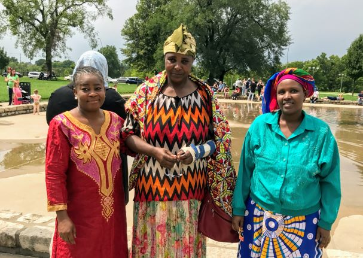

Africa
Bembe is spoken in the Democratic Republic of Congo and Tanzania. After brutal colonial rule and wars, a number of Bembe speakers have moved to Kansas City. These speakers generally also speak Swahili and French.

Bembe is spoken in the Democratic Republic of Congo and Tanzania. After brutal colonial rule and wars, a number of Bembe speakers have moved to Kansas City. These speakers generally also speak Swahili and French.
Mam is an indigenous language spoken in Guatemala by half a million people. Increasing numbers of Guatemalans have moved to Kansas City recently, including a small number of Mam speakers.
Karen (pronounced KA-ren) is spoken by the Karen ethnic group in Myanmar. Hundreds of Karen people have been relocated to Kansas City after ethnic cleansing and civil war in Myanmar.